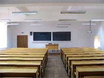

Cursuri de specialitate
Studierea informaticii este provocatoare, captivanta si impune aplicarea notiunilor teoretice dobândite anterior. Cunoasterea informaticii si aplicabilitatea sa reprezinta un atu pentru integrarea garantata si rapida pe piata muncii.
Sistemul de predare este organizat în conformitate cu modelul Bologna: dupa absolvirea studiilor de Licenta în Informatica, studentii care intentioneaza sa-si continue studiile pot alege cursurile de Master în Informatica - Metode si Modele în Inteligenta Artificiala/Tehnologii Avansate de Prelucrare a Informatiei(in limba engleza).
O oferta de predare în strânsa legatura cu piata muncii
Studentii de la specializarea Informatica desfasoara, în cadrul primului ciclu de studii, un stagiu de practica la o companie de profil si încheie acest stagiu cu o lucrare de absolvire ce poate fi realizata în cotutela unei companii IT partenere. Actualmente, exista aproximativ 15 companii partenere ce includ principalii angajatori IT din Craiova si nu numai.
Unele dintre companiile cele mai calificate în domeniul IT au decis sa colaboreze activ cu Departamentul de Informatica prin participarea la mese rotunde, unde cadrele didactice si profesionisti din industrie stabilesc un dialog constructiv reducând, astfel, timpii de reactie. Companiile care au aderat la aceasta initiativa ofera consultanta de specialitate privind oferta noastra educationala, contribuie la dezvoltarea si punerea în aplicare a traseelor de formare educationala si sunt implicate activ în procesul de integrare pe piata muncii a absolventilor cu specializarea Informatica.
Baza materiala moderna
Departamentul de Informatica este pozitionat în cadrul Cladirii centrale a Universitatii din Craiova situata în str. A. I. Cuza, nr. 13, la doi pasi de Teatrul National, asezamânt de cultura binecunoscut atât la nivel national cât si international (vezi harta).
Locatia este usor accesibila cu toate mijloacele de transport public (linia de tramvai, liniile de autobuz).  Sala de curs a Departamentului de Informatica din CraiovaSalile în care se predau cursurile de specialitate în Informatica sunt confortabile si sunt situate în aceeasi cladire cu birourile cadrelor didactice, facilitând interactiunea continua dintre studenti si profesori precum si studiul individual. Laboratoarele dedicate studiilor de baza si avansate sunt spatioase, moderne si bine organizate.
Studenti nostri au acces la Internet atât în laboratoare cât si în salile de curs pin intermediul unei solutii wireless profesionale, de ultima generatie. Toti studentii din provincie au posibilitatea cazarii în caminele modernizate ale facultatii. Studentii au, de asemenea, acces la o biblioteca noua ce include un numar foarte mare de carti si reviste de specialitate.
Absolventii specializarii Informatica pot sa profeseze in urmatoarele meserii:
Firme la care profeseaza absolventii nostri: Microsoft, Oracle, IBM, HP, Pirelli, Hella, Siemens, Alcatel, Ford, Softwin, IQuest Technologies, Ixia, BitDefender, Caphyon etc.